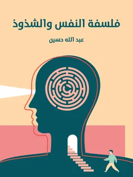

فلسفة النفس والشذوذ

قراءة عربية أصلية محددة النطاق في الصفحات 26 إلى 30 من ملف PDF المرتبط، وليست تلخيصا كاملا للكتاب. نناقش ما تدعمه هذه المقاطع فقط.
اعرف نفسك بنفسك: دروس من التأمل الباطني
يميز المؤلف علم النفس عن سائر العلوم بأنه تأمل الإنسان لنفسه لا لصورته أو جسمه، وهي الطريقة المعروفة باسم «التأمل الباطني»، على حين أن طريقة البحث في سائر العلوم هي المشاهدة الخارجية والملاحظة كما في الطبيعة والكيمياء. ويستشهد بقول أحمد فؤاد الأهواني إنه تعلم علم النفس من التأمل في نفسه أكثر من البحث والاطلاع في الكتب، مستحضرًا حكمة سقراط «اعرف نفسك بنفسك». ثم يحكي تجربته وهو في الحادية عشرة: لم يكن بارزًا في الدراسة بل كثير اللعب متخلفًا عن غيره، فأنبه والده وغاظه أخوه بقوله إني بليد غبي، فعزم على التفوق وشرع ينظر في نفسه: هل أنا بليد؟ واهتدى إلى أن العلة في هذا كله انحلال العزيمة وضعف الإرادة والاستجابة لكل شهوة نفسية، فصمم أن يعارض شهوة الطاعة: كان يخص يومًا من كل أسبوع يصوم فيه، ويومًا آخر لا يأكل فيه شيئًا من الخضر رغم وجود شهي الطعام على المائدة، وظل على هذه الحال أربع سنين حتى وصل إلى الصفاء، في عمل يشبه التصوف دون أن يقرأ هذا العلم أو يعرف اسمه. فصل يؤسس لحتمية نفسية يقرر فيها مع فرويد أن كل عمل من أعمال الإنسان ليس وليد الصدفة.
زاوية وحدود القراءة
قراءة موجزة من ص ٢٦ إلى ص ٣٠ من أصل ٦٢ صفحة، تعرض فصل سر النفس؛ التأمل الباطني طريقًا إلى المعرفة، وتجربة المؤلف في الحادية عشرة مع العزيمة والإرادة، لا الكتاب كاملًا.
الطبعة والقراءة
هذه النسخة من الكتاب صادرة ومتاحة مجانًا من مؤسسة هنداوي بشكل قانوني؛ حيث إن نص الكتاب يقع في نطاق الملكية العامة تبعًا لقوانين الملكية الفكرية.
تنزيل PDF المجاني ↓ القراءة والمصدر الرسمي ↗